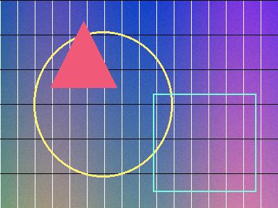

Responsive Image Selection — the srcset / sizes tier
image-selection tier · html-attributes · universal since 2014 — every client site ships responsive images, and srcset/sizes are the only declarative way to let the browser pick the right pixels. The spec leaves the actual pick implementation-defined — so the only way to know what your users download is to measure it. This page is the measurement: four real JPEG renditions, one live server, and every law below re-probed in your engine as you read it. The bytes shown are read back from the Resource Timing API, never estimated.
1 · Surface census — what actually exists
img.src echoes the attribute, img.srcset/img.sizes echo their attribute strings. The one authoritative channel is img.currentSrc: the absolute URL of the file the engine actually picked. Everything on this page is read from currentSrc + the Resource Timing entries for the bytes.Engine: …
2 · The density ladder — the ceil rule (headline)
x descriptors 1x · 2x · 3x
model what would win at DPR X?
Model = the measured Chromium rule: smallest candidate density ≥ DPR, else the largest available. The chip below re-checks the model against the engine's own pick at your real DPR.
deviceScaleFactor): DPR 1 → 1x; 1.25 → 2x; 1.5 → 2x; 1.75 → 2x; 2 → 2x; 2.5 → 3x; 3 → 3x. The 1.25 case is the production trap: Windows 125% scaling and every 1.25× phone gets the 2× file — 4× the pixels of the 1× file for a 25% pixel-density increase. The old spec wording ("the highest density not greater than the desired density") describes the opposite behaviour; today's spec simply says "in an implementation-defined manner, choose one image source". Nothing in the standard promises you a particular pick.| devicePixelRatio | 1x (400 px) | 2x (800 px) | 3x (1200 px) | picked | × pixels vs 1x |
|---|
Sweep measured headlessly in Chromium 155 via CDP Emulation.setDevicePixelRatio — not a spec table.
3 · The width ladder — w descriptors + sizes
sizes="50vw" the image below is 50% of the viewport
sizes omitted same file, no sizes
w descriptors the engine computes a source size in CSS pixels from sizes (default 100vw when the attribute is absent), multiplies by the device pixel ratio, and takes the smallest candidate whose width covers that — or the largest if none does. The math for the left image at a 1280 px viewport: source size 640 CSS px × DPR 1 = 640 device px → the 800w candidate wins. The right image has no sizes, so the source size is 1280 → the 1600w candidate wins. Same pixels on screen, four times the file.4 · THE sizes OMISSION LAW — where the bytes go (headline)
correct sizes="50vw"
omitted no sizes at all
sizes is not a hint — it is the only input that tells the engine how wide the image will actually paint. Omit it and the engine must assume the image spans the viewport, which means the largest candidate is "correct" and gets downloaded. This is the single highest-leverage line in any image-heavy layout: sizes cuts payload by the ratio between the painted width and the viewport width, squared (because bytes scale with area, not length). The numbers on this page are read back from the Resource Timing API for the files this browser actually fetched.5 · Candidate-level invalidity — one bad entry does not kill the set
mixed descriptors 1x + 800w
The folklore says mixing w and x invalidates the whole srcset. It does not — the offending candidate is dropped and the valid one survives.
0w zero-width descriptor
A 0w candidate is a parse error → dropped. The other candidate still loads.
0x zero-density descriptor
0x is not an error: the spec wants "infinite natural dimensions". Chromium clamps them to the LayoutUnit maximum — 33 554 431 px. A one-character typo becomes a 33-million-pixel layout box.
duplicate density two 1x candidates
Duplicates are resolved by dropping the later one — the first candidate with a given density wins.
srcset is per candidate, not per attribute: one malformed entry is silently discarded and the rest of the set still works. That cuts both ways — it means a typo degrades quietly instead of erroring, and it means you can never trust a srcset you have not read back through currentSrc.6 · <picture> — the source order is a priority list
art direction + type gate

order wins over size
<source> elements in document order and takes the first one that survives both gates — media must match the environment, and type must be a format the engine can decode. It is a priority list, not a search: the right-hand image picks the 1600 px file even though a 400 px file is right below it, because the first matching source wins. If every source is skipped, the <img>'s own src/srcset is the fallback — and that fallback is ignored whenever a source wins, which is why img.src and img.currentSrc routinely disagree.7 · sizes media conditions, the 100vw default, and the resize rule
sizes="(max-width: 700px) 100vw, 50vw" — the first true condition wins
sizes list is evaluated top to bottom: the first entry whose media condition matches supplies the source size; if none match, the last entry is used; if the attribute is missing or unusable the source size falls back to 100vw. A bare length is only valid as the final entry (an earlier one is a parse error and is skipped). THE RESIZE LAW: Chromium re-runs the selection on a viewport change, but it upgrades and never downgrades — shrinking the window keeps the already-selected larger file (no re-download), growing it selects the larger candidate and downloads a second file. Measured sequence (Chromium 155, sizes="50vw"): 1280 → w800, 600 → w800 (unchanged), 1280 → w800, 2000 → w1200 (upgraded, second request), 900 → w1200 (kept).8 · sizes="auto" — the keyword that needs the width to be known before the pick
Three identical images, one page, one difference: where the srcset came from. Lane A has it in the markup (the parser owns the pick). Lane B has the same markup but the srcset is injected by script — the pattern every client-side render produces. Lane C drops loading="lazy", which the spec says disables auto entirely.
A · markup sizes="auto" + width="320", srcset in the HTML

B · script the same image, srcset injected by JavaScript
C · eager sizes="auto" without loading="lazy"
sizes="auto" means "use the width this element actually paints at" — but the pick is made once, and only correct if the width is already known at that moment. Chromium resolves it as a race with the first layout: in a short page the width is known in time and the matching file is chosen (measured in Chromium 155 across a 4-case matrix — srcset in the markup vs injected by script × in-viewport vs below-the-fold — 4/4 picked the 320-px-matched file); in a long page the pick can land before layout, the source size stays unresolved, every candidate's density becomes infinite and the engine takes the largest file. Lanes A and B above are the same image with the srcset in the markup vs injected by script — compare what your engine did. Lane C shows the deterministic half: for an eager image the spec does not allow auto-sizes at all, so the 100vw rule applies. The buttons re-run the pick to show that the first choice is sticky: neither re-setting the srcset nor resizing the window makes the engine revisit it. Production rule: treat sizes="auto" as a race you do not control — use sizes in vw/px units, and verify the pick with currentSrc on the real page.9 · The preload law — one request or two (LCP headline)
A <link rel="preload" as="image"> is the standard LCP lever. It only works if the preload resolves to the same candidate the <img> will pick. Run both tests below; the request count comes from the Resource Timing API.
A preload imagesizes matches the img
B preload says 100vw, img says 50vw
<img> only when the preload's imagesrcset + imagesizes resolve to the same candidate the image will select. Measured: matched preload → 1 request; mismatched imagesizes → 2 requests (the preloaded file and the file the img picks); a plain href preload with no imagesrcset → 2 requests as well. A double download of the hero image is the most common cause of a "preload didn't help" LCP regression — the preload is working perfectly, it is just preloading the wrong file.LCP linkage — the URL the browser reports is the URL it picked
url is the selected candidate, so an LCP report pointing at w1600.jpg when the design says w800.jpg is a sizes bug, not a network bug.10 · The lazy threshold and the decode() trap
lazy load request timing
decode() on an image that has not loaded
await img.decode() waits for a load that lazy-loading has deferred: on an image that has not been selected, the promise never settles. The common pattern await img.decode(); img.classList.add('loaded') therefore deadlocks the page until the image scrolls into view — and a broken source rejects with EncodingError, not a generic error.11 · image-set() — the CSS twin that has no sizes
CSS background image-set()
equivalent img with sizes
image-set() picks by density only — there is no sizes for CSS images, so a 300 px-wide box at DPR 2 fetches the 2× file (800 px wide, 2.7× the pixels it needs). The <img> on the right, given the same visual width and a correct sizes, picks a file matched to its painted size. Backgrounds cannot express art direction either — image-set() has no media and no type gate.12 · The IDL truth table — six getters, three different answers
| property | reflects | value on the image above | read it when you want… |
|---|
img.src reflects the attribute ("" when absent — it does not fall back to the document URL in current Chromium), img.srcset and img.sizes echo their attribute strings (never the computed source size), and img.naturalWidth is the density-corrected width — at DPR 2 the 800 px file reports naturalWidth === 400. Only img.currentSrc answers "which file did you actually get".13 · Capstones — what to ship on Monday
OpenDrones · Mission Control
- Mission gallery — a 4-up thumbnail grid:
sizes="(min-width: 1100px) 22vw, (min-width: 700px) 45vw, 92vw". Each thumbnail's painted width is known at authoring time; the browser then stops guessing. - LCP hero — preload with the same
imagesrcset/imagesizesas the img, or you buy two downloads (measured above). - Telemetry stills —
loading="lazy"+ explicitwidth/heightso the grid never shifts (CLS) while the bytes stream in. - Never
await img.decode()on a lazy image — resolve it onloadinstead, or the panel waits for a scroll that may never come.
Molt Studios · client sites
- The one rule: every
srcsetwithwdescriptors ships with asizes. Without it the engine is entitled to fetch the largest file on the page. - Budget check: read
currentSrc+ Resource Timing on the real device; a 400 KB hero on a 390 px phone is asizesbug. - Art direction via
<picture>for crop-heavy verticals — but remember the first matching source wins, so order is the budget. - Format gating with
type="image/avif"costs nothing and skips a JPEG round-trip on Chromium.
Decision table
| you want | use | why |
|---|
Browser support
| feature | Chrome | Firefox | Safari | Edge |
|---|